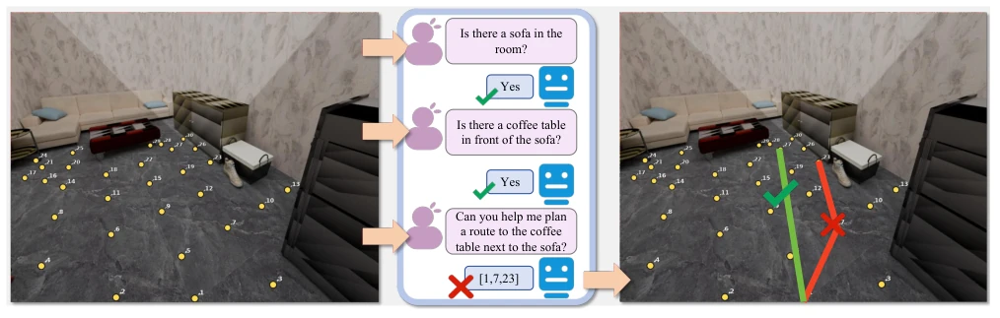
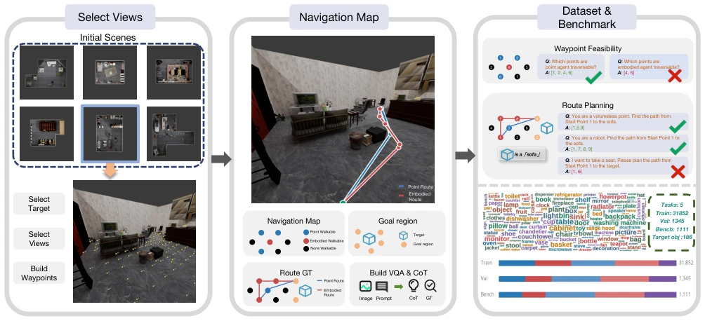
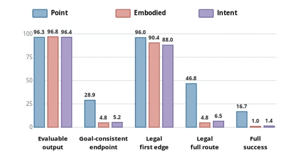
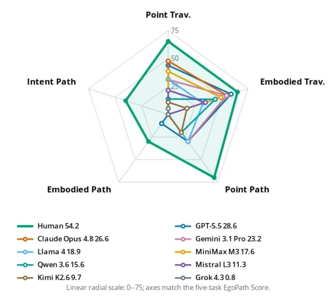

这篇论文给 VLM 的“空间智商”泼了盆冷水。虽然 SpatialVLM 等基准测试了局部关系，但 EgoPathBench 直击痛点：模型能认沙发，却走不到沙发。现有 VLM 在零样本具身导航上，局部可行性和全局路径规划脱节严重。最牛模型在具身路径任务上成功率仅 2.9%，这比人类低了不止一个量级。虽然开源了数据能微调提升，但核心问题——多步决策中的几何一致性，依然是当前 Foundation Model 的阿喀琉斯之踵。
This paper casts doubt on the "spatial intelligence" of VLMs. Although benchmarks like SpatialVLM test local relationships, EgoPathBench addresses the core challenge: models can recognize a sofa but cannot navigate to it. Existing VLMs in zero-shot embodied navigation suffer from a severe disconnect between local feasibility and global path planning. The top-performing model achieves only a 2.9% success rate on embodied path tasks, which is more than an order of magnitude lower than humans. Although open-sourced data enables improvement through fine-tuning, the core issue—geometric consistency in multi-step decision-making—remains the Achilles' heel of current Foundation Models.
研究动机Motivation
现有空间智能基准如 SpatialVLM (Chen et al. 2024) 和 EmbSpatial-Bench (Du et al. 2024) 多评估孤立的空间判断（如方向、距离），缺乏对整合导航能力的测量。导航不仅需要识别目标，还需评估动作后果、距离估计和路径规划。EgoPathBench 填补了这一评估空白，旨在隔离 waypoint 选择，直接评估 VLM 在具身约束下生成几何可行且目标一致路线的能力，而非仅测试组件视觉问题。
Existing spatial intelligence benchmarks such as SpatialVLM (Chen et al. 2024) and EmbSpatial-Bench (Du et al. 2024) mostly evaluate isolated spatial judgments (e.g., direction, distance), lacking measurement of integrated navigation capabilities. Navigation requires not only recognizing targets but also evaluating action consequences, distance estimation, and path planning. EgoPathBench fills this evaluation gap, aiming to isolate waypoint selection, directly evaluating the ability of VLMs to generate geometrically feasible and goal-consistent routes under embodied constraints, rather than merely testing component-level visual issues.

Figure 1: Conceptual motivation for EgoPathBench. On the same first-person scene, familiar recognition and local spatial questions can be answered correctly. The right panel contrasts a complete, goal-reaching route with an incorrect route that violates the route and goal criteria. This contrast motivates evaluating integrated, embodiment-aware route decisions rather than component visual questions alone.
方法Method
整体流程基于 3D 场景渲染和几何验证。首先从 3RScan、ScanNet 等数据集选取场景和第一人称视角，过滤遮挡。接着投影可见 Waypoint，构建 Point 和 Embodied 两种可行性图（Feasibility Graph），区分点代理与具身代理的几何约束。随后生成 5 类任务：点/具身可达性（Traversability）及点/具身/意图路径（Path），包含显式目标和意图目标。数据生成后，通过 Spatial CoT 生成推理文本。最后，所有预测基于几何验证的参考路线进行评估，确保每个问题都有至少一条有效路径。评测指标涵盖候选可行性、邻接边合法性及目标到达率。此外，作者还发布了训练资源，支持 SFT 微调，验证了数据对提升空间决策能力的有效性。
The overall process is based on 3D scene rendering and geometric verification. First, scenes and first-person perspectives are selected from datasets such as 3RScan, ScanNet, filtering occlusions. Next, visible Waypoints are projected, constructing Point and Embodied feasibility graphs (Feasibility Graph), distinguishing geometric constraints of point agents and embodied agents. Subsequently, 5 types of tasks are generated: Point/Embodied Traversability and Point/Embodied/Intent Path, including explicit goals and intent goals. After data generation, reasoning text is generated through Spatial CoT. Finally, all predictions are evaluated based on geometrically verified reference routes, ensuring each problem has at least one valid path. Evaluation metrics cover candidate feasibility, legality of adjacent edges, and goal arrival rate. In addition, the authors also released training resources, supporting SFT fine-tuning, verifying the effectiveness of data in improving spatial decision-making capabilities.

Figure 2: EgoPathBench construction pipeline. We select scenes, first-person views, and targets, then build visible waypoints, point- and embodiment-specific navigation maps, goal regions, and geometry-verified reference routes. These fixed scene annotations support image-question and Spatial CoT generation, yielding two waypoint-feasibility tasks and three route-planning tasks across the training, validation, and benchmark splits.
The dataset contains 30,000 training, 1,000 validation, and 1,000 benchmark questions. 9 VLMs are tested, with metrics including BA, F1, VPR, SR, SPL. Results show Gemini 3.1 Pro total score 28.3, embodied path success rate only 2.9%. Diagnosis reveals models can choose the first step correctly, but the proportion of illegal edges in multi-step paths is high. Human baseline score 54.2, the gap is significant. After fine-tuning Qwen 3.5 4B, EgoPath Score rises to 38.9, and transfer to external benchmarks like SpatialEval shows improvement, proving data effectiveness.

Figure 3: Route diagnostics pooled over nine VLMs (%). Rates over all predictions measure evaluable output, goal- consistent endpoint selection, legal first action, full-route le- gality, and joint success.

Figure 4: Same-question comparison of humans and nine VLMs across five tasks, with traversability measured by 2BA −1, route performance by success rate, and EgoPath Score shown in the legend.